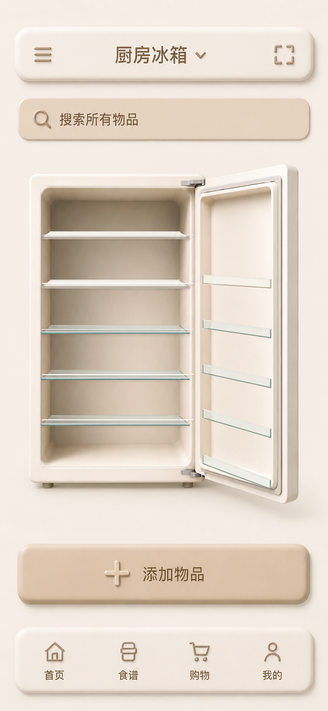
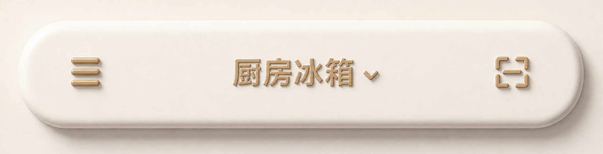
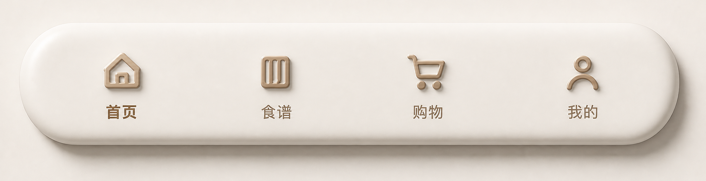
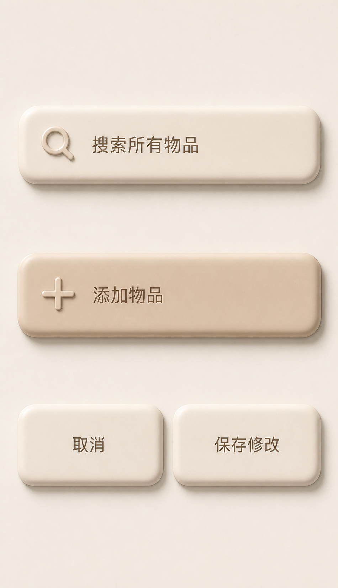

1. 首页组合稿 · 390×844 结构基线

2. 顶部栏 · 标题与 SVG 印章浮雕

3. 底部导航 · SVG 浮雕，标签平面


4. 共享控件层级
- 搜索框与主按钮使用偏咖啡的奶油色，厚度约为导航胶囊的一半。
- 搜索与加号 SVG 使用方向相关浮雕；占位文字、按钮文字和导航标签保持平面。
- 主操作颜色更深，次操作颜色更浅；不使用黑色实心按钮。
- 所有曲面共享左上光源，右下暗面宽度由局部方向决定，不使用固定复制偏移。